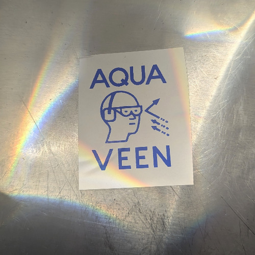

BLINDHÆD
2025
A multi-media artwork featuring event cameras, exploring the transformation of vision through technology.

Studies of BLINDHÆD
2025
Analog photographs of BLINDHÆD, capturing the physical elements of the artwork.
The Procedure
2025
Live-performance of BLINDHÆD at DOK Filmfest in Leipzig.

Aqua Veen Set Recordings
2023
Collection of DJ sets by Aqua Veen over the years.

Ungefilterte Schätze
2020
Two vinyl recordings spanning ambient, IDM, and acid-house. Recorded from home.

Monoliths
2019–2020
Photographs of monoliths in urban environments.

Facades
2018–2022
Photographs of architectural facades and their material textures.

Sakral
2017–2022
A photographic series documenting sacred architecture.